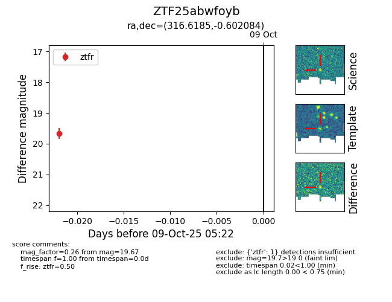

FINK: ZTF25abwfoyb
Lasair: ZTF25abwfoyb
ALeRCE: ZTF25abwfoyb
ZTF25abwfoyb (ztf,fink)
equatorial (ra, dec) = (316.6185,-0.60208)
galactic (l, b) = (49.2906,-29.95579)

last ztfr=19.67
1 ztfr detections